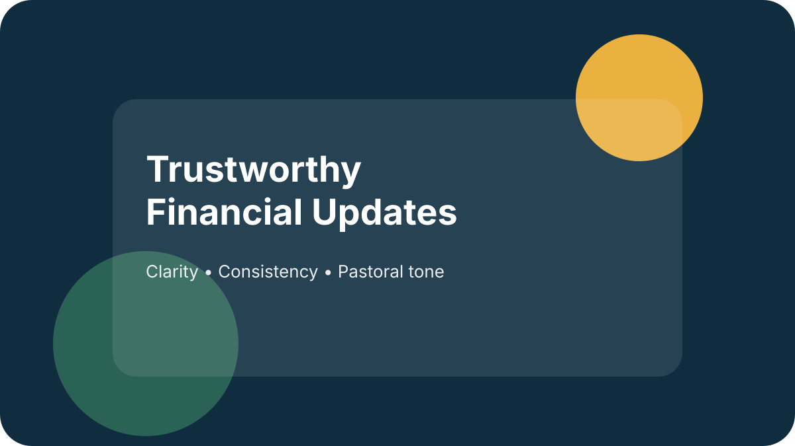

Church Giving FAQ: The Simple Resource That Reduces Awkwardness (and Increases Participation)

Most church leaders don’t avoid talking about giving because they don’t believe in stewardship. They avoid it because the topic can feel awkward, easy to misunderstand, and one poorly worded moment away from sounding self-serving.
A Giving FAQ solves that problem in a surprisingly pastoral way.
It doesn’t pressure anyone. It simply answers honest questions with clarity.
When people can quickly find why the church talks about generosity, how to give (especially online), where the money goes, and what accountability looks like, they’re far more likely to participate with confidence.
This post gives you a simple framework and a copy/paste Giving FAQ you can publish on your website and point to all year.
Where to put your Giving FAQ (so it actually gets used)
If the FAQ is buried, it won’t help. Put it where questions show up:
- On your main giving page (best place)
- Linked near every “Give” button
- In your newcomer email flow (week 1 or week 2)
- In a giving-moment slide / QR code (“Questions? See our Giving FAQ”)
- In your annual report / stewardship emphasis page
- In your church app (if you have one)
Tip: Create an easy-to-say URL like yourchurch.org/givingfaq.
Why a Giving FAQ works (especially right now)
A Giving FAQ helps churches in three ways:
1) It reduces friction.
People often intend to give, but get stuck: “Where’s the link?” “Can I set up recurring?” “Is this secure?” If it’s not simple, it doesn’t happen.
2) It reduces suspicion.
Silence creates stories. A calm, clear FAQ signals: “We’re not hiding anything.”
3) It reduces pastoral awkwardness.
Instead of re-explaining sensitive topics from the platform, you can simply say: “If you have questions, our Giving FAQ is on the website.”
Copy/Paste Giving FAQ (editable “we/our church” language)
Use this as-is, then tailor specifics (links, funds, names, processes).
1) Why does our church talk about giving?
We talk about giving because generosity is part of following Jesus. Giving is not a “membership fee” or a way to earn God’s love. It’s a spiritual practice that helps us put God first, loosens the grip of money on our hearts, and fuels the mission God has entrusted to our church.
2) Is giving required to attend or belong here?
No. You are welcome here whether you give or not. If you consider this church your home and you’re able to give, generosity is one meaningful way to participate in our shared mission.
3) Where does the money go?
Your giving supports:
- Ministry and discipleship for all ages
- Local and global mission partners
- Staff and operational support that keeps ministry healthy
- Facilities and resources that serve people week to week
- Care and outreach in our community
If you’d like more detail, we share financial updates and accountability information (see below).
4) How can I give?
You can give in several ways:
- Online (one-time or recurring)
- In-person during services
- By mail
- Through bank transfer/ACH (if available)
Visit: [LINK TO GIVING PAGE] for the fastest options.
5) Can I set up recurring giving?
Yes—recurring giving is one of the most helpful ways to support consistent ministry. To set it up, go to [LINK] and choose “recurring” (weekly or monthly).
6) Is online giving secure?
We take security seriously and use a trusted, secure giving platform. Your payment details are encrypted and processed through secure systems. If you ever have questions or need help, contact [EMAIL/PHONE].
7) What if I’m new to church or new to giving?
If you’re new, there’s no pressure. We’re glad you’re here. If you’d like to begin practicing generosity, a simple starting point is choosing an amount that’s meaningful and sustainable, then giving consistently.
If you’d like to talk with a pastor about generosity in your situation, we’d be honored to help.
8) Do you teach tithing?
We teach generosity as a biblical practice. Many Christians use the tithe (10%) as a helpful benchmark, but we don’t present a percentage as a measure of spiritual maturity. Our goal is not equal amounts—it’s equal sacrifice, growing faith, and a generous heart.
9) What if I’m in debt or struggling financially—should I give?
If you’re in a crisis situation, please don’t hear “give” as “ignore wisdom.” We want to help people live with financial health and peace. If you need support, counseling, or help connecting to resources, please reach out to [PASTOR/CARE TEAM CONTACT].
Many people still choose to give something—even small—as an act of worship while also taking responsible steps toward stability. If you’re unsure, we encourage you to talk with a pastor.
10) Can I designate my gift to a specific fund?
In many cases, yes. We offer designated funds for specific ministry needs when appropriate.
Please note: designated giving is used as intended, but if a fund is oversupported or a need changes, we may apply gifts to the closest aligned ministry purpose to ensure good stewardship.
(Adjust this statement based on your finance policy.)
11) Do you share a budget or financial updates?
Yes. We provide financial updates and maintain accountability practices to steward resources with integrity. If you have questions about our finances or would like to learn more, contact [FINANCE CONTACT].
12) Who oversees the church’s finances?
Our finances are overseen by church leadership and qualified finance teams (such as a finance committee and/or board/elders). We follow internal controls and accountability practices designed to ensure transparency and integrity.
(Optional: add a short list of controls you actually use—dual-approval, monthly reporting, annual review, etc.)
13) Do you have an audit or external review?
Where applicable, we use outside review processes (such as an annual review, compilation, or audit) to strengthen accountability. If you have questions about our financial oversight, please contact [NAME/ROLE].
14) Will I receive a giving statement for tax purposes?
Yes. We provide annual giving statements for contributions that qualify under applicable tax rules. If you need to update your contact information or have a question about your statement, contact [EMAIL].
15) Can I give stock, use a donor-advised fund (DAF), or make a large gift?
Yes—there are options beyond standard online giving. If you’d like to explore stock gifts, DAF giving, or other non-cash gifts, please contact [PERSON/EMAIL] and we’ll help you make the gift in a way that’s smooth and properly receipted.
Leader maintenance checklist (10 minutes per quarter)
Once per quarter:
- Confirm the giving link works
- Confirm contact emails are monitored
- Ensure designated funds listed are still accurate
- Review security/processing language for accuracy
- Add 1–2 updated impact examples (optional)
A simple way to introduce this (without making it weird)
“We know people have honest questions about giving—how it works, where it goes, and what accountability looks like. We put a Giving FAQ on our website to make that clear and easy to find.”
Want help tailoring this for your church?
Book a free consultation and we’ll help you put simple language, clear next steps, and a sustainable rhythm around generosity.
Book a Free Consultation